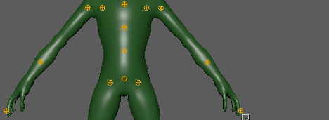

- 从“HumanIK”窗口的“开始”(Start)窗格中，选择“快速装备工具”(Quick Rig Tool)（）
- 选择
- 从“装备”(Rigging)菜单集中，选择。
- 从“装备”(Rigging)工具架中，选择“快速装备”(Quick Rig)
“快速装备”(Quick Rig)工具可用于快速将装备添加到两足动物角色网格。可以按照两种方法使用此工具：使用自动功能或分步工作流。尽管自动“一键式”(One-Click)选项适合于标准角色网格，但是通过“分步”(Step-by-Step)选项可以更好地控制自动装备流程。
有关如何使用自动装备流程的说明，请参见为网格创建自动角色装备。
- “角色”(Character)菜单
- 使用下拉菜单可选择角色。“快速装备”(Quick Rig)角色是一个 HumanIK 角色，具有装备数据的额外元数据。
- 刷新角色列表(Refresh Character List)
- 通过可用的“快速装备”(Quick Rig)角色更新“角色”(Character)字段。
- 创建新角色(Create a new Character)

- 创建可与“快速装备”(Quick Rig)工具结合使用的新“快速装备”(Quick Rig)角色。
- 重命名角色(Rename Character)
- 用于重命名当前的“快速装备”(Quick Rig)角色。
- 删除角色(Delete Character)
- 删除当前的“快速装备”(Quick Rig)角色。
一键式(One-Click)
单击“一键式”(One-Click)，可使用自动选项装备角色网格。如果角色网格是两足动物且 Y 轴向上并面向正 Z 方向，则此过程效果最佳。
分步(Step-By-Step)
选择“分步”(Step-By-Step)选项，可通过 5 个步骤将装备添加到两足动物角色网格。
注： 角色网格必须位于 Y 轴向上世界空间中，面向 Z 轴。
有关详细工作流，请参见为网格创建自动角色装备。
- “几何体”(Geometry)区域
- 此区域用于指定装备场景中的哪些网格。
-
- 添加选定网格(Add Selected Meshes)
- 使用选定网格填充“几何体”(Geometry)列表。
注： 某些网格附带辅助网格，例如，眼睛、头发、附件等。使用“选择所有网格”(Select All Meshes)
 ，确保这些网格也处于选中状态。
，确保这些网格也处于选中状态。
- 选择所有网格(Select All Meshes)
- 选择场景中的所有网格并将其添加到“几何体”(Geometry)列表。
注： 此步骤相当于运行 select `ls -type mesh`; MEL 命令。
- 清除所有网格(Clear all meshes)
- 清空“几何体”(Geometry)列表。
- 添加选定网格(Add Selected Meshes)
- “导向”(Guides)区域
- 导向是辅助对象标记，可用于调整网格内的关节放置。
-
- 嵌入方法(Embed Method)
- 此区域可用于指定使用哪种网格，以及如何以最佳方式进行装备。有四个选项。单击“帮助”(Help)图标
 可查看所选方法的描述。
可查看所选方法的描述。
-
- 理想网格(无体素化)(Perfect Mesh (no voxelization))
- 这种方法适用于“理想网格”，即属于闭合、防水、二维流形且不含自交或内部/隐藏几何体的网格。它使用伪法线测试从外部对网格的内部区域进行分段。它不使用体素化。如果不考虑网格条件，分段很可能是错误的。这可能会使分段过程显著变长，阻止骨架成功嵌入。
- 防水网格(泛洪)(Watertight mesh (flood fill))
- 这种方法适用于“防水网格”，即其面将网格的内部区域与外部区域完全分离的网格。该网格可能具有退化的面、错误的面方向、自相交等。这种方法使用表面体素化，将与网格面相交的所有体素归为内部区域的一部分。然后，它从外部执行填充，将所有到达的体素标记为模型外部区域的一部分。最后，所有未到达的体素被标记为内部区域的一部分。这种方法很有效，只要网格是防水的，即：不含高达体素化分辨率的孔。否则，填充会到达内部区域，并创建不准确的分段。
- 非理想网格(泛洪 + 生长)(Imperfect mesh (flood fill + growing))
- 这种方法适用于如下网格：其中的孔可以使填充步骤到达网格的内部区域，但是面方向的一致性足以使填充它们变为可能。首先，它使用表面体素化，将与网格面相交的所有体素归为内部区域的一部分。然后，它交替使用填充步骤和生长步骤。填充步骤试图从外部到达所有体素，这样未到达的体素将被标记为内部区域的一部分。生长步骤使用相对计算密集型过程，检查那些已确定体素的所有相邻项中是否有内部体素。任何确定为内部的体素有可能填补洞，使后续填充步骤可以确定更多的内部体素。
- 多边形汤(修复)(Polygon soup (repair))
- 这种方法没有流形或面方向要求。它使用给定偏移(体素大小的 3 倍)重构包裹输入网格的网格，并使用该理想的二维流形网格从模型外部区域对内部区域进行分段。由于偏移的缘故，它可能会失去一些细节，并合并邻近的部分。但是，这通常不是身体部位彼此太接近的通用模型的问题。
- 无嵌入(No Embedding)
- 此方法先将骨架恢复到其原始站姿，然后在网格上尝试任何嵌入。在嵌入失败时请使用此选项，以便手动创建和放置导向。这样，即使嵌入失败，您仍然可以使用快速装备工具创建骨架等。
-
- “分辨率”(Resolution)字段
- 从此字段中选择要用于装备的分辨率。分辨率越高，处理时间就越长。
- 导向设置(Guide Settings)
- 该区域可用于配置导向的生成，帮助 Maya 将骨架关节与网格上的适当位置对齐。
注： 这些导向以其将成为的 HumanIK 关节命名。有关 HumanIK 关节名称的说明，请参见 HumanIK 角色结构。
-
- 对称(Symmetry)
- “对称”(Symmetry)菜单可用于根据边界框或髋部放置选择对称。某些角色基本对称，但是也有些角色的特征或特性会接触到对应的边界框（及其中心），从而无法与角色对称平面对齐。
如果您的角色符合这一描述，请使用“髋部”(Hips)选项根据当前髋部位置创建对称。
- 选择“边界框”(Bounding Box)可设置边界框中心，供映射到中心关节（居中的髋部、脊椎和颈部）或对称关节（肩部、手臂和腿部）的导向参考。中心/镜像平面是穿过网格边界框中心的 YZ 平面。除非角色打算采用不同的比例，否则建议将此选项保持启用状态。
- 如果不希望在导向嵌入期间强制导向对称，请选择“无对称”(No Symmetry)。您仍然能够通过角色上的髋部手动使用镜像工具（请参见“用户调整导向”）。
- 中心(Center)
- 用于设置创建的导向数量，进而设置生成的骨架和装备将拥有的关节数。默认的 HumanIK 骨架有 3 个脊椎节点，颈部和肩部/锁骨各一个。
- 髋部平移(Hips Translation)
- 用于生成骨架的髋部平移关节。
-
可以在两个不同的关节之间除指定髋部关节之外还指定髋部平移关节，来拆分角色的骨盆的平移和旋转。默认情况下，髋部转换关节控制角色的髋部的平移，髋部关节控制角色的髋部的旋转。
- 创建/更新(Create/Update)
- 单击“创建/更新”(Create/Update)将导向添加到角色网格。
- 删除导向(Delete Guides)
- 清除角色网格中的导向。
- “用户调整导向”(User Adjustment of Guides)区域
- 您可以使用移动工具手动定位 Maya 用于创建骨架的导向辅助对象，以便更好地匹配角色网格。使用以下选项有助于进行定位。
-
- 从左到右镜像/从右到左镜像(Mirror Left to Right/Mirror Right to Left)
- 使用选定导向的位置可对齐另一侧的导向。中心导向捕捉到镜像平面
-

-
注： “从左到右镜像”(Mirror Left to Right)工具在面对角色时使用角色左侧的选定导向（即，角色右侧的导向），并在面对角色时将镜像平面偏移应用于角色右侧对称的对应对象（即，在角色左侧）。
“从右到左镜像”(Mirror Right to Left)工具的工作原理相反。
- 选择导向(Select Guides)
- 选择所有导向。
- 显示/隐藏所有导向(Show/Hide All Guides)
- 启用或禁用导向的显示。
- “启用 X 射线显示关节”(Enable X-Ray Joints)
- 在所有视口中启用 X 射线显示关节。
- 导向颜色(Guide Color)

- 单击以打开颜色选择器(Color Chooser)，用于设置新的导向颜色。
- 角色生成(Character Generation)
- 此区域可用于生成角色骨架和 HumanIK 控制装备。
-
- 骨架设置(Skeleton Settings)
-
- T 形站姿校正(T-Stance Correction)
- 激活此选项后，可以在调整处于 T 形站姿的新 HumanIK 骨架的骨骼大小以匹配嵌入骨架之后对其进行角色化，之后控制装备会将骨架还原回嵌入姿势。建议使用此选项；如果禁用“T 形站姿校正”(T-Stance Correction)选项，则 HumanIK 骨架将以嵌入姿势角色化，在某些情况下，如果嵌入姿势并非 T 形站姿（A 形站姿是常用的替代方法），例如将动画重定目标时，这会产生意外结果。
- 对齐关节 X 轴(Align Joint X-Axis)
- 通过此设置可以选择如何在骨架上设置关节方向。
-
镜像行为(Mirrored Behavior) 此选项指定 Z 和 X 关节旋转轴的对称行为。为了创建对称行为，“镜像行为”(Mirrored Behavior)会先将一侧的关节 X 轴方向设置为朝向子对象，然后再将另一侧设置为朝向子对象的相反方向。 这将创建具备以下特点的关节 X 轴：- 脊椎指向子对象
- 左臂和左腿指向子对象
- 右臂和右腿背离子对象
这是默认设置。
朝向下一个关节的 X 轴(X Towards Next Joint) 将 X 轴设置为朝向节点的子对象。通常，这意味着脊椎关节、腿部、右臂和左臂的方向分别朝上、朝下、朝右和朝左（当角色处于 T 形站姿时）。 这表示如果为手臂或腿部的 X 轴旋转设置动画，将无法实现对称行为。
世界 - 不对齐(World - No Alignment) 创建遵循世界方向的关节。
- “骨架和控制装备”(Skeleton and Control rig)菜单
- 从此菜单中选择是要创建具有控制装备的骨架，还是仅创建骨架。
- 创建/更新(Create/Update)
- 单击“创建/更新”(Create/Update)，为角色网格创建带有或不带控制装备的骨架。
- “蒙皮”(Skinning)区域
- 此区域可用于控制将网格蒙皮附加到骨架的方式。
-
- 绑定方法(Binding Method)
- 从该菜单中选择蒙皮绑定方法。测地线体素绑定(Geodesic Voxel Binding)可为大多数网格类型提供良好的绑定，因此是默认设置。
- 单击“设置”(Settings)图标 以打开绑定蒙皮选项(Bind Skin Options)，可以在其中自定义蒙皮绑定首选项。
- 创建/更新(Create/Update)
- 单击“创建/更新”(Create/Update)对角色进行蒙皮，这将完成角色网格的装备流程。
- 删除蒙皮(Delete Skin)
- 删除所创建的角色蒙皮。